Implementation of a selection of gradient palettes available in cpt-city.
The following scales and palettes are provided:
scale_*_hypso_d(): For discrete values.scale_*_hypso_c(): For continuous values.scale_*_hypso_b(): For binning continuous values.hypso.colors(): A gradient color palette. See alsogrDevices::terrain.colors()for details.
An additional set of scales is provided. These scales can act as hypsometric (or bathymetric) tints.
scale_*_hypso_tint_d(): For discrete values.scale_*_hypso_tint_c(): For continuous values.scale_*_hypso_tint_b(): For binning continuous values.hypso.colors2(): A gradient color palette. See alsogrDevices::terrain.colors()for details.
See Details.
Additional parameters ... would be passed on to:
Discrete values:
ggplot2::discrete_scale()Continuous values:
ggplot2::continuous_scale()Binned continuous values:
ggplot2::binned_scale().
Note that tidyterra just documents a selection of these additional parameters, check the previous links to see the full range of parameters accepted by these scales.
Usage
scale_fill_hypso_d(
palette = "etopo1_hypso",
...,
alpha = 1,
direction = 1,
na.translate = FALSE,
drop = TRUE
)
scale_colour_hypso_d(
palette = "etopo1_hypso",
...,
alpha = 1,
direction = 1,
na.translate = FALSE,
drop = TRUE
)
scale_fill_hypso_c(
palette = "etopo1_hypso",
...,
alpha = 1,
direction = 1,
na.value = "transparent",
guide = "colourbar"
)
scale_colour_hypso_c(
palette = "etopo1_hypso",
...,
alpha = 1,
direction = 1,
na.value = "transparent",
guide = "colourbar"
)
scale_fill_hypso_b(
palette = "etopo1_hypso",
...,
alpha = 1,
direction = 1,
na.value = "transparent",
guide = "coloursteps"
)
scale_colour_hypso_b(
palette = "etopo1_hypso",
...,
alpha = 1,
direction = 1,
na.value = "transparent",
guide = "coloursteps"
)
hypso.colors(n, palette = "etopo1_hypso", alpha = 1, rev = FALSE)
scale_fill_hypso_tint_d(
palette = "etopo1_hypso",
...,
alpha = 1,
direction = 1,
na.translate = FALSE,
drop = TRUE
)
scale_colour_hypso_tint_d(
palette = "etopo1_hypso",
...,
alpha = 1,
direction = 1,
na.translate = FALSE,
drop = TRUE
)
scale_fill_hypso_tint_c(
palette = "etopo1_hypso",
...,
alpha = 1,
direction = 1,
values = NULL,
limits = NULL,
na.value = "transparent",
guide = "colourbar"
)
scale_colour_hypso_tint_c(
palette = "etopo1_hypso",
...,
alpha = 1,
direction = 1,
values = NULL,
limits = NULL,
na.value = "transparent",
guide = "colourbar"
)
scale_fill_hypso_tint_b(
palette = "etopo1_hypso",
...,
alpha = 1,
direction = 1,
values = NULL,
limits = NULL,
na.value = "transparent",
guide = "coloursteps"
)
scale_colour_hypso_tint_b(
palette = "etopo1_hypso",
...,
alpha = 1,
direction = 1,
values = NULL,
limits = NULL,
na.value = "transparent",
guide = "coloursteps"
)
hypso.colors2(n, palette = "etopo1_hypso", alpha = 1, rev = FALSE)Arguments
- palette
A valid palette name. The name is matched to the list of available palettes, ignoring upper vs. lower case. See hypsometric_tints_db for more info. Values available are:
"arctic","arctic_bathy","arctic_hypso","c3t1","colombia","colombia_bathy","colombia_hypso","dem_poster","dem_print","dem_screen","etopo1","etopo1_bathy","etopo1_hypso","gmt_globe","gmt_globe_bathy","gmt_globe_hypso","meyers","meyers_bathy","meyers_hypso","moon","moon_bathy","moon_hypso","nordisk-familjebok","nordisk-familjebok_bathy","nordisk-familjebok_hypso","pakistan","spain","usgs-gswa2","utah_1","wiki-2.0","wiki-2.0_bathy","wiki-2.0_hypso","wiki-schwarzwald-cont".- ...
Arguments passed on to
ggplot2::discrete_scale,ggplot2::continuous_scale,ggplot2::binned_scalebreaksOne of:
labelsOne of:
NULLfor no labelswaiver()for the default labels computed by the transformation objectA character vector giving labels (must be same length as
breaks)An expression vector (must be the same length as breaks). See ?plotmath for details.
A function that takes the breaks as input and returns labels as output. Also accepts rlang lambda function notation.
expandFor position scales, a vector of range expansion constants used to add some padding around the data to ensure that they are placed some distance away from the axes. Use the convenience function
expansion()to generate the values for theexpandargument. The defaults are to expand the scale by 5% on each side for continuous variables, and by 0.6 units on each side for discrete variables.minor_breaksOne of:
n.breaksAn integer guiding the number of major breaks. The algorithm may choose a slightly different number to ensure nice break labels. Will only have an effect if
breaks = waiver(). UseNULLto use the default number of breaks given by the transformation.nice.breaksLogical. Should breaks be attempted placed at nice values instead of exactly evenly spaced between the limits. If
TRUE(default) the scale will ask the transformation object to create breaks, and this may result in a different number of breaks than requested. Ignored if breaks are given explicitly.
- alpha
The alpha transparency, a number in [0,1], see argument alpha in
hsv.- direction
Sets the order of colors in the scale. If 1, the default, colors are ordered from darkest to lightest. If -1, the order of colors is reversed.
- na.translate
Should
NAvalues be removed from the legend? Default isTRUE.- drop
Should unused factor levels be omitted from the scale? The default (
TRUE) removes unused factors.- na.value
Missing values will be replaced with this value. By default, tidyterra uses
na.value = "transparent"so cells withNAare not filled. See also #120.- guide
A function used to create a guide or its name. See
guides()for more information.- n
the number of colors (\(\ge 1\)) to be in the palette.
- rev
logical indicating whether the ordering of the colors should be reversed.
- values
if colours should not be evenly positioned along the gradient this vector gives the position (between 0 and 1) for each colour in the
coloursvector. Seerescale()for a convenience function to map an arbitrary range to between 0 and 1.- limits
One of:
NULLto use the default scale rangeA numeric vector of length two providing limits of the scale. Use
NAto refer to the existing minimum or maximumA function that accepts the existing (automatic) limits and returns new limits. Also accepts rlang lambda function notation. Note that setting limits on positional scales will remove data outside of the limits. If the purpose is to zoom, use the limit argument in the coordinate system (see
coord_cartesian()).
Details
On scale_*_hypso_tint_* palettes, the position of the gradients and
the limits of the palette are redefined. Instead of treating the color
palette as a continuous gradient, they are rescaled to act as a hypsometric
tint. A rough description of these tints are:
Blue colors: Negative values.
Green colors: 0 to 1.000 values.
Browns: 1000 to 4.000 values.
Whites: Values higher than 4.000.
The following orientation would vary depending on the palette definition (see hypsometric_tints_db for an example on how this could be achieved).
Note that the setup of the palette may not be always suitable for your
specific data. For example, raster of small parts of the globe (and with a
limited range of elevations) may not be well represented. As an example, a
raster with a range of values on [100, 200] would appear almost as an
uniform color.
This could be adjusted using the limits/values provided by ggplot2.
hypso.colors2() provides a gradient color palette where the distance
between colors is different depending of the type of color. In contrast,
hypso.colors() provides an uniform gradient across colors.
See Examples.
See also
hypsometric_tints_db, terra::plot(), terra::minmax(),
ggplot2::scale_fill_viridis_c()
See also ggplot2 docs on additional ... parameters:
scale_*_terrain_d(): For discrete values.scale_*_terrain_c(): For continuous values.scale_*_terrain_b(): For binning continuous values.
Other gradient scales and palettes for hypsometry:
scale_color_coltab(),
scale_cross_blended,
scale_terrain,
scale_whitebox
Examples
# \donttest{
filepath <- system.file("extdata/volcano2.tif", package = "tidyterra")
library(terra)
volcano2_rast <- rast(filepath)
# Palette
plot(volcano2_rast, col = hypso.colors(100, palette = "wiki-2.0_hypso"))
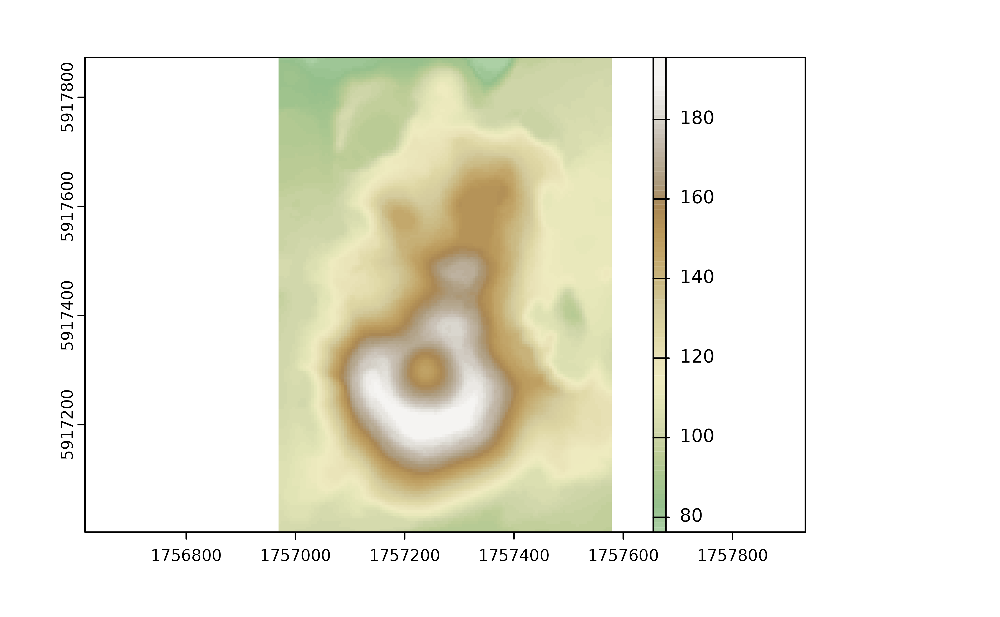
# Palette with uneven colors
plot(volcano2_rast, col = hypso.colors2(100, palette = "wiki-2.0_hypso"))
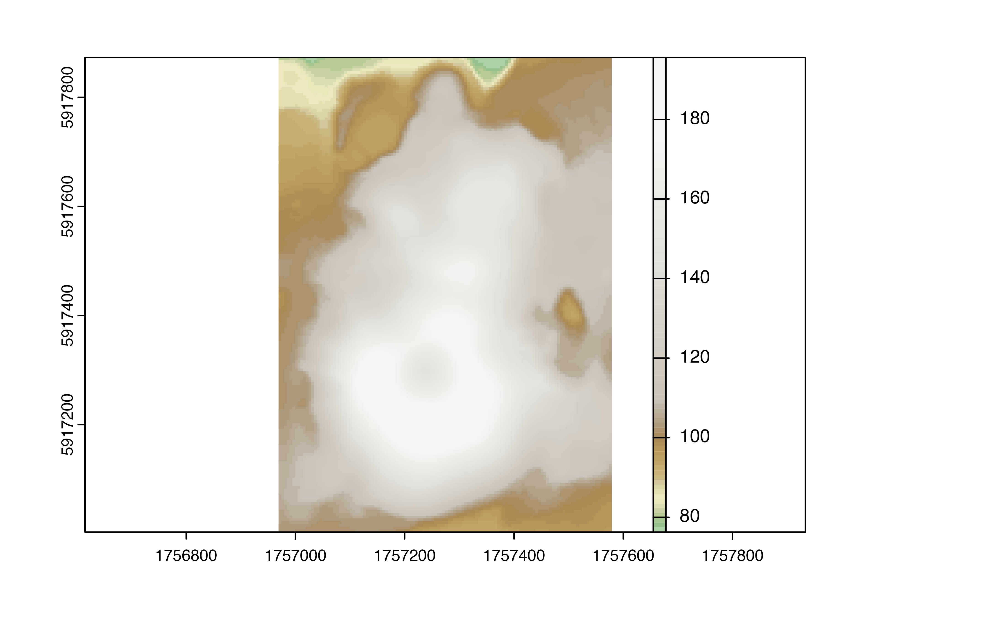
library(ggplot2)
ggplot() +
geom_spatraster(data = volcano2_rast) +
scale_fill_hypso_c(palette = "colombia_hypso")
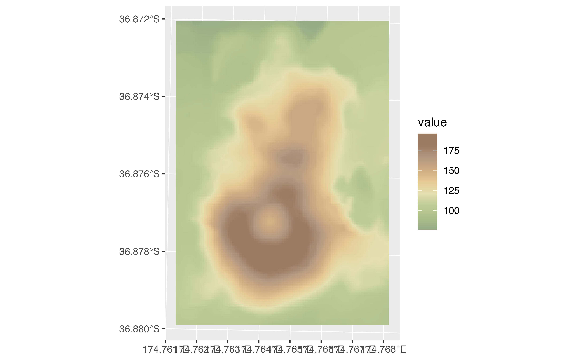
# Use hypsometric tint version...
ggplot() +
geom_spatraster(data = volcano2_rast) +
scale_fill_hypso_tint_c(palette = "colombia_hypso")
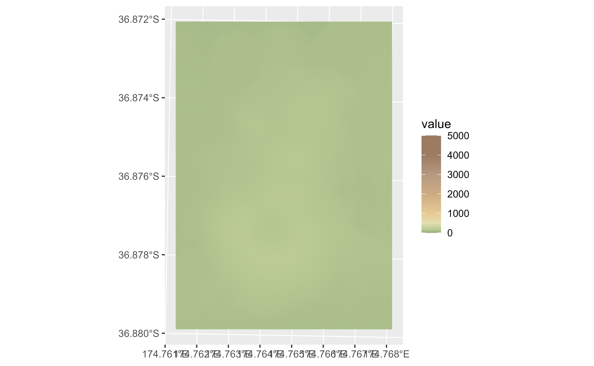
# ...but not suitable for the range of the raster: adjust
my_lims <- minmax(volcano2_rast) %>% as.integer() + c(-2, 2)
ggplot() +
geom_spatraster(data = volcano2_rast) +
scale_fill_hypso_tint_c(
palette = "colombia_hypso",
limits = my_lims
)
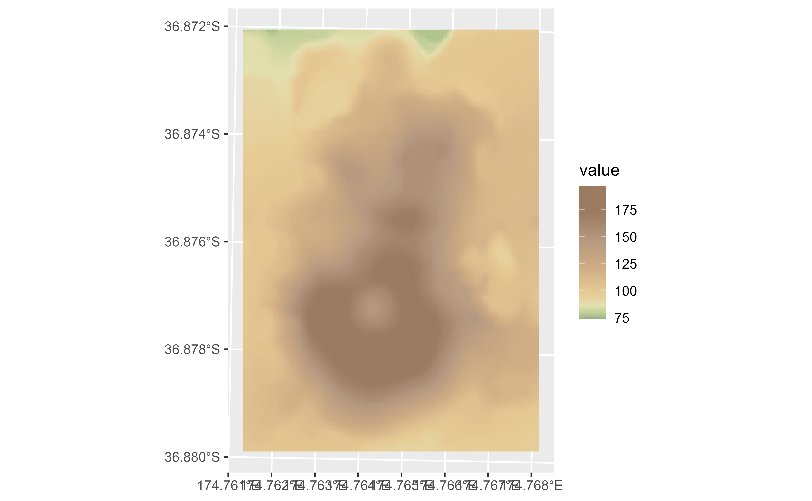
# Full map with true tints
f_asia <- system.file("extdata/asia.tif", package = "tidyterra")
asia <- rast(f_asia)
ggplot() +
geom_spatraster(data = asia) +
scale_fill_hypso_tint_c(
palette = "etopo1",
labels = scales::label_number(),
breaks = c(-10000, 0, 5000, 8000),
guide = guide_colorbar(
direction = "horizontal",
title.position = "top",
barwidth = 25
)
) +
labs(fill = "elevation (m)") +
theme_minimal() +
theme(legend.position = "bottom")
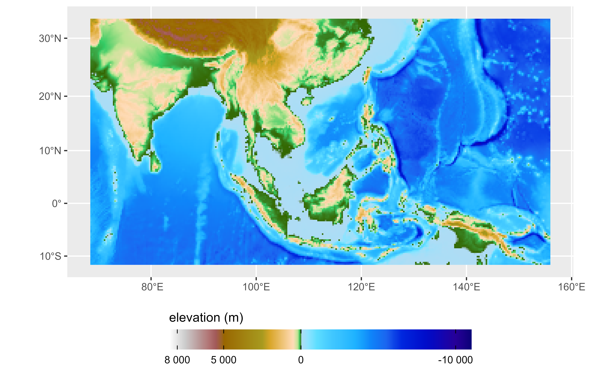
# Binned
ggplot() +
geom_spatraster(data = volcano2_rast) +
scale_fill_hypso_b(breaks = seq(70, 200, 25), palette = "wiki-2.0_hypso")
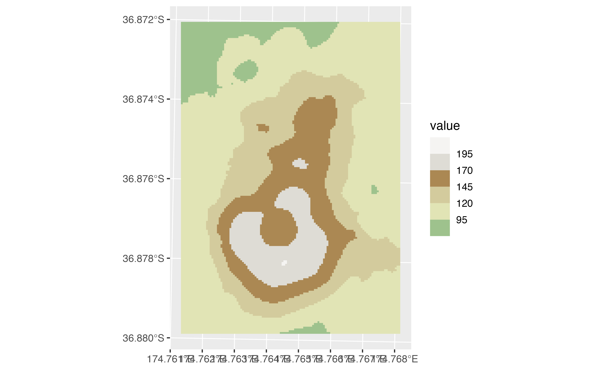
# With limits and breaks
ggplot() +
geom_spatraster(data = volcano2_rast) +
scale_fill_hypso_tint_b(
breaks = seq(75, 200, 25),
palette = "wiki-2.0_hypso",
limits = my_lims
)
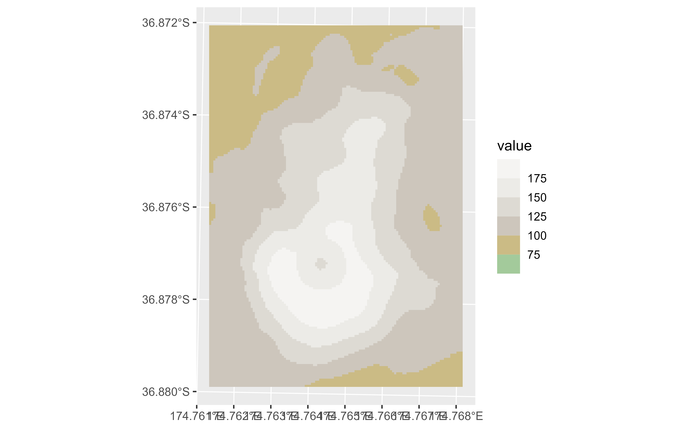
# With discrete values
factor <- volcano2_rast %>% mutate(cats = cut(elevation,
breaks = c(100, 120, 130, 150, 170, 200),
labels = c(
"Very Low", "Low", "Average", "High",
"Very High"
)
))
ggplot() +
geom_spatraster(data = factor, aes(fill = cats)) +
scale_fill_hypso_d(na.value = "gray10", palette = "dem_poster")
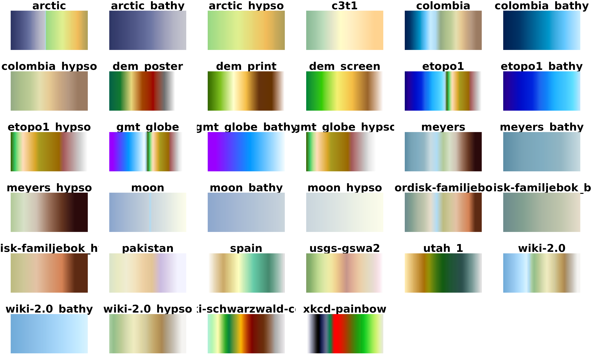
# Tint version
ggplot() +
geom_spatraster(data = factor, aes(fill = cats)) +
scale_fill_hypso_tint_d(na.value = "gray10", palette = "dem_poster")
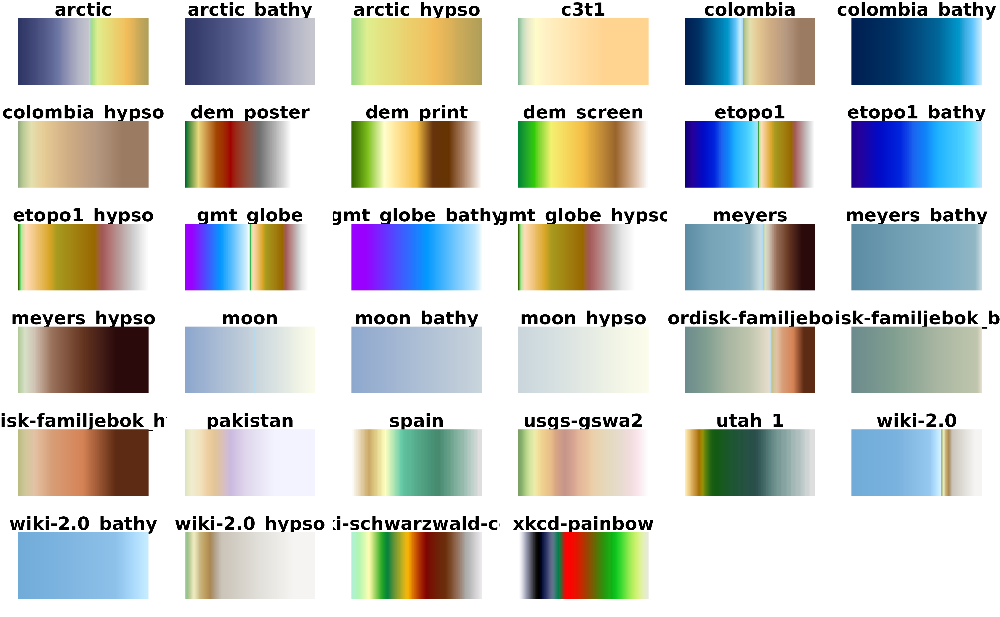
# }
# Display all the cpl_city palettes
pals <- unique(hypsometric_tints_db$pal)
# Helper fun for plotting
ncols <- 128
rowcol <- grDevices::n2mfrow(length(pals))
opar <- par(no.readonly = TRUE)
par(mfrow = rowcol, mar = rep(1, 4))
for (i in pals) {
image(
x = seq(1, ncols), y = 1, z = as.matrix(seq(1, ncols)),
col = hypso.colors(ncols, i), main = i,
ylab = "", xaxt = "n", yaxt = "n", bty = "n"
)
}
par(opar)
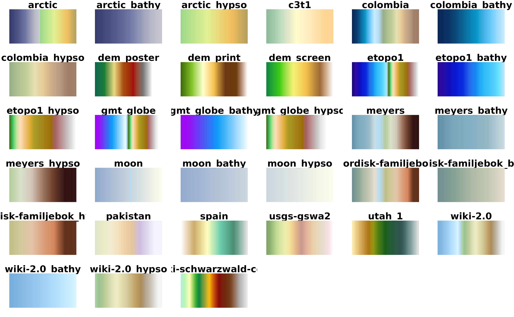
# Display all the cpl_city palettes on version 2
pals <- unique(hypsometric_tints_db$pal)
# Helper fun for plotting
ncols <- 128
rowcol <- grDevices::n2mfrow(length(pals))
opar <- par(no.readonly = TRUE)
par(mfrow = rowcol, mar = rep(1, 4))
for (i in pals) {
image(
x = seq(1, ncols), y = 1, z = as.matrix(seq(1, ncols)),
col = hypso.colors2(ncols, i), main = i,
ylab = "", xaxt = "n", yaxt = "n", bty = "n"
)
}
par(opar)
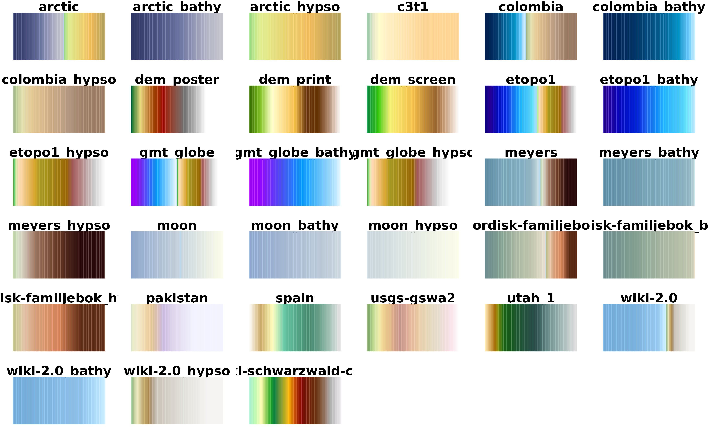